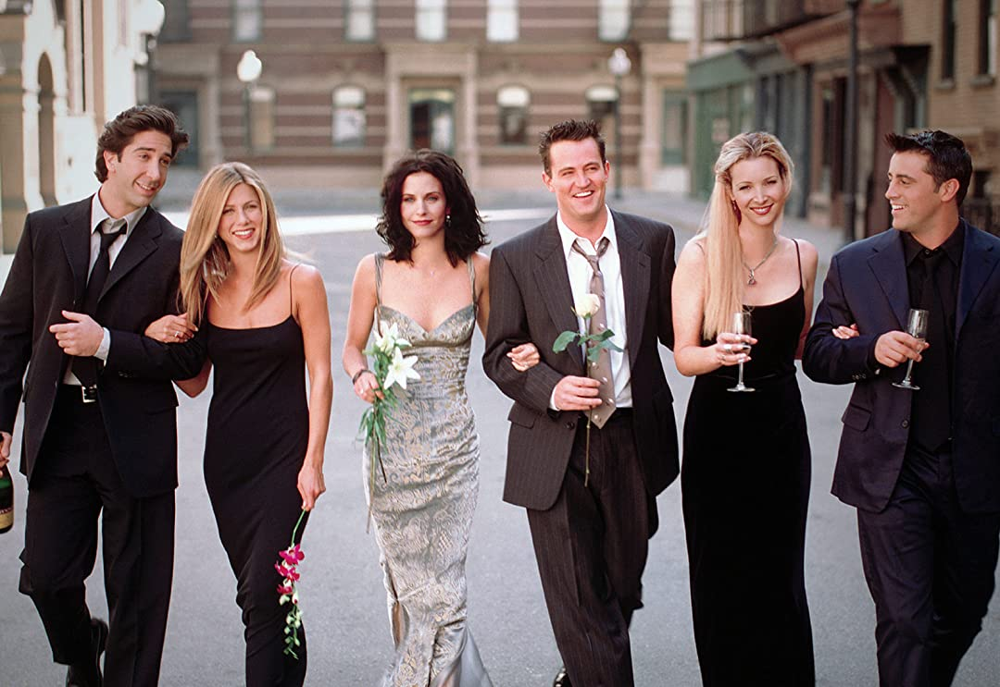

Create Draft
How to Create a Draft
(1) Gather a Group of Friends
You need a minimum of six people to start your MTG Fantasy draft. Friends are preferable, though if you are short feel free to ask for more people on social media, at your local MTG store, or even your family. With our extensive guides, someone with little knowledge can still play the game, so ask everyone. The bigger the party, the more enjoyable the league is!
(2) Naming your Draft

Next up is coming up with a name for the MTG Fantasy draft. It is recommended that everyone agrees to it in the league, but the one who must type up the name is whoever creates the draft (by visiting the create drafts page). No need to worry about unqiue names: different drafts can have the same name. Just pick whatever fancies the group most.
Notice: the person who creates the draft (only one person needs to do this) needs to login/create an account before doing so.
(3) Inviting your Friends to the Draft
There are two ways to invite your friends to the draft. The first way is to add them when creating the draft as a player. You can either enter their account name (if they have one) or any email address. The second option is to give them an invite code after the draft is already created. This can be sent via email automatically or just texted at your will. For the code option or registering them via an email, the friend will receive a link to the draft and then have to login or register before joining.
(4) Enjoy the Draft!
After all of the above, the draft is set up! All that is needed is to set a time/date with the group to do the draft and then the MTG Fantasy League will commence automatically.